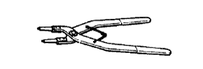
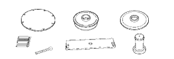

БЛОК АВТОМАТИЧЕСКОЙ ТРАНСМИССИИ > ПОВТОРНАЯ СБОРКА > Подготовка
|  |
|
SST

| 09320-89010
| Приспособление для сжатия пружины муфты раздаточной
коробки
| 
| 09350-30020
| Набор инструментов для автоматической трансмиссии
TOYOTA
| 
| (09350-07040)
| Приспособление для сжатия поршневых пружин № 2
| 
| (09350-07050)
| Приспособление для сжатия поршневых пружин № 3
| 
| (09350-07060)
| Съемник стопорных колец № 1
| 
| (09350-07070)
| Съемник стопорных колец № 2
| 
| (09350-07110)
| Съемник сальника
| 
| 09351-40010
| Набор инструментов для автоматической трансмиссии
TOYOTA
|
| 09387-00070
| Ключ для снятия тормоза первой передачи и передачи заднего хода
| 
| 09950-60010
| Комплект оправок
| 
| (09951-00650)
| Оправка 65
| 
| 09950-70010
| Комплект сменных рукояток
| 
| (09951-07150)
| Рукоятка 150
| |
|
SSM
| Фирменный герметик Toyota 1281, Three Bond 1281 или аналогичный
|
| Фирменный герметик Toyota 1324, Three Bond 1324 или аналогичный
| |
|
ОБОРУДОВАНИЕПрибор для измерения углов
| -
| Штангенциркуль
| -
| Нутромер
| -
| Индикатор часового типа
| -
| Комплект плоских щупов
| -
| Микрометр
| -
| Система бортовой диагностики OBD II
| -
| Поверочная линейка
| -
| Динамометрический ключ
| -
| V-образная призма
| -
| Штангенциркуль
| -
| |
|
РЕКОМЕНДУЕМЫЕ ИНСТРУМЕНТЫ
| 09017-1C130
| Разрезная головка 17 мм
| -
| 
| 09031-00030
| Бородок с тонким цилиндрическим концом
| -
| 
| 09082-00040
| Электрический диагностический прибор TOYOTA
| -
| |
|
СМАЗОЧНЫЕ МАТЕРИАЛЫЖидкость для автоматических трансмиссий: Заполнение сухой системы
| 1GR-FE:
| 10,9 литра (11,5 кварты США, 9,6 английской кварты)
| Жидкость для автоматических трансмиссий WS от компании Тойота
| 1KD - FTV:
| 10,6 литра (11,2 кварты США, 9,3 английской кварты)
| Жидкость для автоматических трансмиссий: Заполнение после слива
| 1GR-FE:
| 3,0 литра (3,2 кварты США, 2,6 английской кварты)
| 1KD - FTV:
| |
|